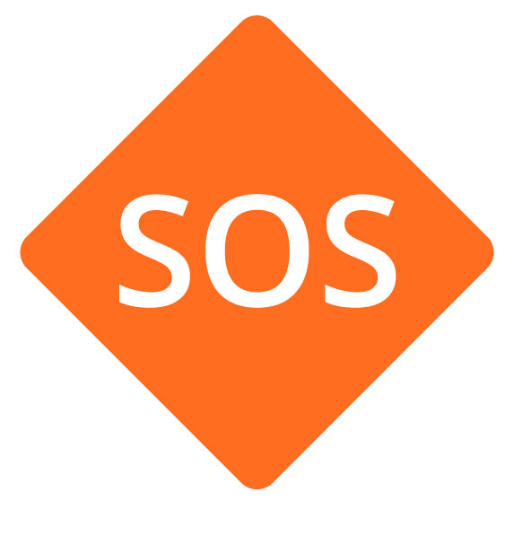

<ion-header mode="ios" [ngClass]="tabStyle" >
  <!-- [ngClass]="{this.isHome ? 'tabs--header-white' : 'tabs--header'}" -->
  <!-- menu toggle -->
  <ion-menu-toggle auto-hide="false">
    <div class="header--tabs">
      <div class="header--avatar">
        
      </div>
      <span class="header--notification">{{total_notification}}</span>
    </div>
  </ion-menu-toggle>

  <!-- car selector -->
  <div class="header--selector">
    <!--
    <a>
      <span (click)="onClickSelector()">Mini Cooper</span>
      <ion-icon name="ios-arrow-down"></ion-icon>
    </a>
    -->
    <ion-select placeholder="Seleccciona un auto" cancelText="Cerrar" interface="action-sheet"
      [(ngModel)]="car_select" (ionChange)="changeCar()" [ngStyle]="{color: selectorStyle}">
      <ion-select-option *ngFor="let car of cars" [value]="car">{{car?.car.details.maker_name}}
        {{car?.car.details.description}}</ion-select-option>
    </ion-select>
  </div>

  <!-- car status -->
  <div class="header--status" routerLink="/status">
    <!-- insertar componente de status -->
    <!-- <status-pia></status-pia> -->
    <video autoplay muted loop>
      <source src="../../../assets/demo/status-tabs-ok.mp4" type="video/mp4">
    </video>
  </div>

</ion-header>

<ion-content>

<!-- floating action -->
  <ion-fab vertical="bottom" horizontal="end" slot="fixed">
    <ion-fab-button color="transparent" mode="ios" (click)="onClickSos()">
      
    </ion-fab-button>
  </ion-fab>

  <!-- tabs -->
  <ion-tabs>
    <ion-tab-bar slot="bottom" mode="ios">

      <ion-tab-button tab="welcome" (click)="tabWhite()">
        
        <ion-label>Mi Auto</ion-label>
      </ion-tab-button>

      <ion-tab-button [disabled]="disabled" tab="trips" (click)="tabDark()">
        
        <ion-label>Viajes</ion-label>
      </ion-tab-button>

      <ion-tab-button [disabled]="disabled" tab="habits" (click)="tabDark()">
        
        <ion-label>Hábitos</ion-label>
      </ion-tab-button>

      <ion-tab-button [disabled]="disabled" tab="rewards" (click)="tabDark()">
        
        <ion-label>Rewards</ion-label>
      </ion-tab-button>

      <ion-tab-button [disabled]="disabled" tab="policy" (click)="tabDark()">
        
        <ion-label>Póliza</ion-label>
      </ion-tab-button>

    </ion-tab-bar>
  </ion-tabs>
  <!-- - -->
</ion-content>
